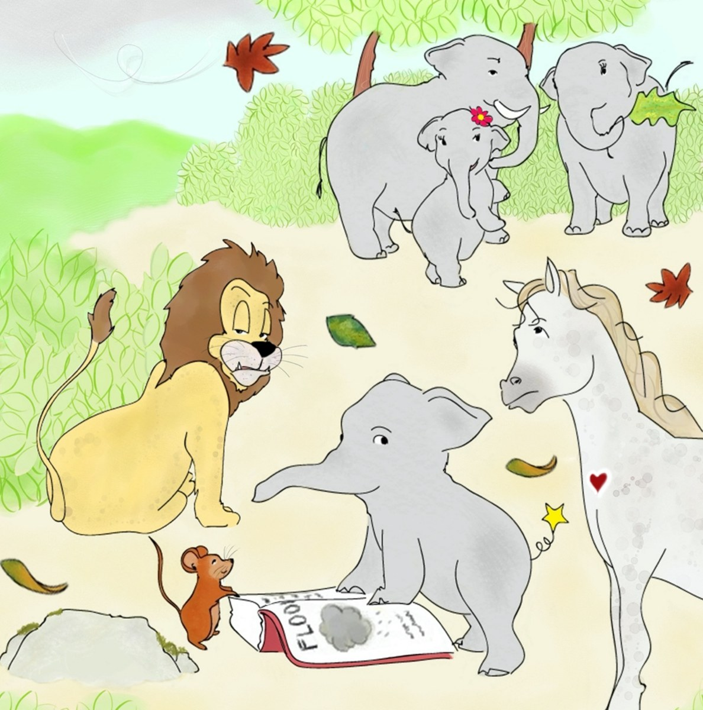
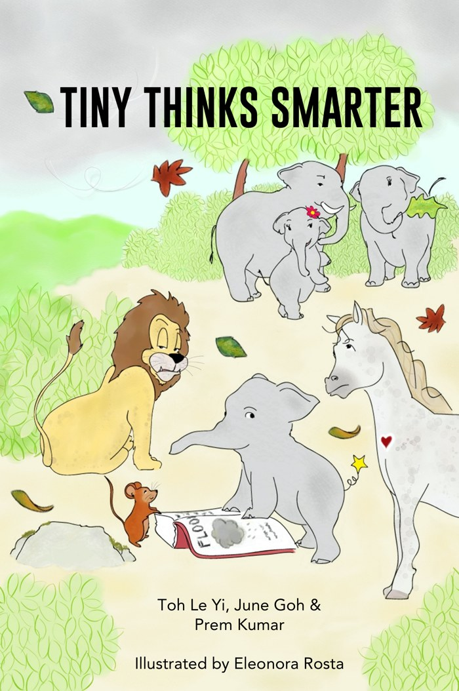

Notice patterns
Like Mighty the mouse, keep track of what happens over time, so you can see what keeps repeating.
Help students notice patterns, ask why and think before they act, through the story of Tiny, a young elephant who finds a way to keep his family safe from the floods.

Play the video in class, then ask: what patterns do you notice around you, at home, at school or with your friends?
Through Tiny's story, students practise thinking skills they can use in any subject and in everyday life.
Like Mighty the mouse, keep track of what happens over time, so you can see what keeps repeating.
Like Tiny, ask the questions no one else is asking, instead of accepting how things have always been.
First the wind, then the rain, then the flood. Trace what leads to what.
Try an idea out, even when others doubt it, and be ready to change your mind when the evidence shows something new.

Toh Le Yi, June Goh and Prem Kumar · illustrated by Eleonora Rosta
A baby elephant named Tiny saves his family from danger. Follow him as he searches for answers and confronts the deeply held beliefs of his tribe.
And the question the book leaves open: what do you think happened to Arthur the lion?
Practical systems thinking tools that teachers can bring into their lessons, across subjects.
Story-based sessions built around Tiny Thinks Smarter, with activities that help students notice patterns and ask better questions.
Longer programmes for schools that want to build systems thinking across the whole school, shaped around your needs.
Email us to order books or to discuss a workshop or programme for your teachers or students.
globalsystemsthinking@gmail.com